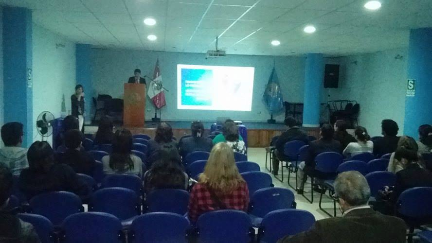

Novedades

Visita a lavoratoria
Que mejor forma de festejar un aniversario más que en la práctica. RASTREANDO MIS TENSIONES fue un taller de diagnóstico participativo breve realizado por nuestros colegas Luis Alëxandër y Stephany en Laboratoria
Leer más
Agradecimientos a asistentes
Agradecemos a las y los asistentes al evento realizado el 22 de abril en el Colegio de Psicólogos de Arequipa, esperamos que haya sido un espacio significativo para ustedes.
Leer más
Participamos en el V Congreso Nacional de Juventudes
Participamos en el V Congreso Nacional de Juventudes, que se llevó a cabo el 17, 18 y 19 de Setiembre en la ciudad de Huaraz - Ancash, representados por nuestra compañera Máriori Quispe Carcasi
Leer más

Copyri@2016 Desarrollado por: Laboratoria